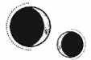

CAPÍTULO 72
Julius 1789
Shiseo había muerto.
Su regreso había pendido sobre la cabeza de Helena como una espada, como una certeza inevitable. Él volvería y entonces ella se marcharía. Era una conclusión de la que nunca había creído poder escapar.
Kaine negaba con la cabeza despacio, como si ni siquiera él pudiera creérselo.
—¿Está confirmado?
—Nos han enviado su cabeza. Desde Novis aseguran que no han tenido nada que ver con ello, que han sido los supervivientes de la Llama Eterna, pero… ya no queda nadie capaz de hacer algo así. Ha sido un ataque de prueba. La reina está tanteando el terreno y quiere comprobar si los países aliados se lavarán las manos en caso de verse obligados a escoger bando y si Nueva Paladia tendrá los recursos necesarios para defenderse. —Bajó la vista y el aire se cargó de resonancia, pero aun así dejó escapar una carcajada—. Lo más irónico de todo esto es que este era nuestro plan. Esto era justo lo que teníamos pensado hacer. Pero se suponía que debían esperar hasta que yo hubiera desaparecido del mapa. —Tiró el casco contra la pared—. Ahora han puesto a Morrough sobre aviso y le han dado tiempo para reagrupar fuerzas y sacar a los necrómatas de las minas. Y yo sigo vivo y no puedo negarme a acatar sus órdenes. ¡Joder!
Entonces iban a morir todos. Kaine iba a morir, ella iba a morir, su hija iba a morir. Puntaférreo era una tumba además de una jaula.
Extendió una mano para tocarlo con los dedos al borde del entumecimiento.
—No pasa nada. Has hecho todo lo que has podido.
«Prefiero morir en tus brazos».
—Tú te vas a marchar igual —dijo él tras fruncir el ceño brevemente. Helena lo miró sin entender nada mientras él se ponía los guantes. El plan de escape dependía de Shiseo, sí—. Pero hay otras opciones, aunque tienen… más fisuras. Es bastante probable que corras el riesgo de que te sigan si se dan prisa. Morrough hará lo que sea necesario con tal de recuperarte. Si llegas a la costa a tiempo, podrás desaparecer antes de que te alcancen, pero… tendrás que llegar sola hasta Lila. A no ser que te veas con fuerzas para volar en Amaris sin ayuda.
—¿Cómo…? ¿Sola?
Incluso antes, cuando todavía era fuerte y no sufría ataques de pánico sin motivo, montar a lomos de Amaris era algo que solo había tolerado por necesidad. La altura y la velocidad a las que volaba eran aterradoras. Por si fuera poco, la quimera siempre había sabido adónde ir; nunca había necesitado que Helena la guiara.
No concebía volar de noche con Lumitia casi desaparecida en el cielo. El mundo sería un abismo negro bajo sus pies. Se mareaba solo con imaginárselo.
—Te llevaré tan lejos como pueda. Habrá un barco esperándote río abajo para acercarte a la costa. Te enseñaré mis mapas y la ruta que tendrás que seguir por el continente para encontrar a Lila. También podría prepararte algún transporte, pero creo que será más seguro que al menos hagas una parte del trayecto a pie si te ves capaz de ello. Irás a la zona portuaria justo antes de la latencia; allí te he dejado un billete y documentos de identidad falsos para que viajes hasta Etras, donde ya te he preparado un lugar para alojarte.
El corazón de Helena se estremeció y dio un vuelco mientras trataba de asimilarlo.
—No tienes que tomar una decisión ya —la tranquilizó Kaine, apoyando una mano sobre su hombro—. Prepararé ambas opciones para que puedas elegir. Sé que será duro, pero merecerá la pena. Lila lleva ya un tiempo esperándote.
Helena asintió, temblorosa.
Tendrían que actuar deprisa. Lumitia no iba a esperar por ellos y, si estallaba una guerra entre Paladia y los países vecinos, Kaine no quería que Helena estuviera todavía allí para verla.
Después de pasar tantos años con la esperanza de que Novis o cualquiera de los demás países intervinieran en el conflicto, ahora habían decidido hacerlo en el peor momento posible.
—Tengo que irme —dijo Kaine al cabo de un instante—. Vendré a verte en cuanto pueda. Intenta comer y descansar. Y no le abras la puerta a nadie. Por suerte, ahora que Aurelia no está, el cerrojo será mucho más seguro. Crowther no dominaba la resonancia férrea pese a que mi padre se ha esforzado por sacar su poder del fondo de su cadáver decrépito. Mientras la puerta permanezca cerrada, no podrá entrar.
Estaba divagando porque estaba nervioso; la situación empezaba a írsele de las manos. La misma intervención que la Resistencia había estado esperando al ser aniquilada había destrozado también todos sus planes, cuidadosamente trazados.
Apenas vio a Kaine después de aquello. Pasó varios días fuera y Helena dudaba que estuviera durmiendo en absoluto. Por su parte, ella intentó cumplir con lo que le había prometido: comió e hizo su rutina de ejercicios en la habitación para ganar resistencia y recuperar fuerzas, de manera que el plan de huida no estuviera tan limitado por su condición física.
Atreus regresó a Puntaférreo. Si la noticia del asesinato de Aurelia había salido a la luz, esta no parecía haber tenido el más mínimo efecto sobre su integridad. Sin embargo, por cómo deambulaba por la casa, daba la impresión de haberse quedado sin prisioneros. Helena oyó sus pisadas por el pasillo que conducía hasta su dormitorio y lo vio salir y entrar de la capilla unas cuantas veces.
Cuando las alas de Amaris sacudieron las ventanas, supo que Kaine había regresado, aunque fuera por unas horas. Su plan de huida no era lo único que lo mantenía ocupado. Como Sumo Inquisidor, se esperaba que coordinara la respuesta al ataque que habían sufrido los inmarcesibles.
Por eso, le sorprendió que entrara en su habitación unos minutos más tarde.
Los ojos le brillaban tanto que casi resplandecían, y ese fulgor le hacía parecer menos humano que nunca. Se acercó a ella como si percibiera su presencia, pero sin verla en realidad.
—¿Kaine?
A Helena estaba a punto de salírsele el corazón por la boca, pero él no respondió. Tenía el presentimiento de que algo terrible había sucedido. Un escalofrío le caló hasta los huesos y, aunque todo su cuerpo le pedía que huyera, avanzó hacia él y le tocó el rostro con suavidad.
—¿Qué ha pasado?
Kaine parpadeó y su expresión recuperó un atisbo de humanidad. Helena siguió sosteniéndole la cara y se la bajó con cuidado para que la mirara.
—¿Kaine?
—Nunca había matado a tantos de golpe… —susurró.
—¿Cuántos han sido?
Movió los ojos de un lado a otro, como si intentara calcular el número exacto, pero negó con la cabeza.
—¿Qué ha pasado? —insistió la chica.
Kaine la miraba sin verla, como si no estuviera del todo presente.
—Me pidieron una demostración de fuerza. Que les hiciera una advertencia. —Tragó saliva—. Había hileras e hileras de prisioneros. No sé de dónde consiguieron a tantos.
Mientras hablaba, su expresión se fue descomponiendo hasta volverse dolorosamente juvenil. Con la mirada desencajada, no parecía más que un muchacho. Estaba paralizado por la conmoción y daba la sensación de que estuviera explicándose la situación a sí mismo, más que hablándole a Helena.
—No esperaba que hubiera tantos. Se suponía que la situación no se descontrolaría hasta que yo ya no estuviera aquí.
Helena le rodeó los hombros con los brazos y lo estrechó contra su cuerpo. Pese a que estaban en pleno verano, Kaine tenía la piel fría y húmeda. No parecía que fuera a aguantar mucho más así. Tenía la sensación de que Kaine estaba intentando darle esquinazo a su propio destino. Sin embargo, cada vez que conseguía sacarle algo de ventaja, Morrough le asignaba una nueva tarea.
Y Helena no podía hacer nada para impedirlo. La impotencia la estaba consumiendo.
—¿Has visto a Ivy? ¿Te ha dicho algo? ¿Sabes si sigue con los planes? A lo mejor si…
Kaine pareció volver a la realidad con un parpadeo. Negó con la cabeza y estiró la espalda.
—Para. Estoy bien… Solo me encuentro cansado. Todo irá bien. Esto se acabará pronto.
Aunque trataba de tranquilizarla, sus palabras abrieron un vacío en su interior cuando salió de la habitación.
Helena se había quedado con los nervios tan alterados tras la partida de Kaine que, cuando notó un movimiento en la parte baja del abdomen, su primer impulso fue entrar en pánico.
Se mantuvo quieta como una estatua, con el corazón encogido, y entonces lo volvió a notar. Como un revoloteo. Bajó la mirada y se tiró del vestido para pasar las manos por el bulto que le crecía entre las caderas. A veces, todavía se olvidaba de que estaba encinta.
Aunque el embarazo de Lila había sido toda una sorpresa, a ella siempre le habían gustado los niños. Lila era un imán para ellos: sabía cómo hacerles reír. Helena, sin embargo, nunca tuvo esa cualidad, así que no sabía si sería una buena madre o si la decisión de tener al bebé no era más que el reflejo de su propio egoísmo, de su incapacidad para rendirse.
O de su deseo de querer, de saber que alguien la necesitaba.
La mano le temblaba cuando se presionó el vientre y dejó que la resonancia se sumergiera en su interior tímidamente para percibir los diminutos huesos de la pequeña, todavía más blandos que el cartílago, así como las delicadas venas que surcaban su cuerpecito.
Pronto, su hija sería lo único que le quedara de Kaine en el mundo.
—Voy a cuidar de ti —le susurró—. Es… lo que tu papá y yo siempre hemos hecho el uno por el otro.
Un segundo después de pronunciar aquellas palabras, Kaine entró por la puerta. Había pasado casi un día entero desde el incidente, pero todavía tenía un color perturbador y sus ojos seguían desprendiendo un brillo demasiado intenso.
—Stroud está de camino —dijo con voz tensa—. He venido tan rápido como he podido, pero tengo que…
Tan pronto como llegó a su altura, le quitó los grilletes y le colocó los conductos de anulitio en las muñecas. Helena se estremeció al notar que su resonancia se desvanecía como una luz al apagarse.
Kaine apenas había terminado de hablar cuando se le desenfocó la mirada.
—Ya está aquí. Asegúrate de esconderlo todo.
Cuando Stroud entró en la habitación, Helena supo enseguida que la tensión que se respiraba en el país no le estaba haciendo ningún bien a la mujer. Tenía los ojos hundidos y las mejillas rojas por los capilares rotos.
—La Central está específicamente diseñada para acomodar a las gestantes —estaba diciendo con aquella voz suya tan estridente—. Marino es nuestro sujeto de prueba más importante. Debería estar allí para que yo pueda seguir de cerca el desarrollo del feto y avancemos más deprisa una vez que sea viable.
—¿Y crees que el «entorno gestacional» que has creado le vendrá bien a una persona con una dolencia cardiaca detonada por el estrés? Dejarla allí sería como pedir a gritos un aborto espontáneo —replicó Kaine con una mueca de desprecio—. Marino es mi prisionera. El Sumo Nigromante me la confió para que la vigilara y, que yo sepa, todavía no ha cambiado de idea. No permitiré que te interpongas en mi tarea solo porque ya no cuentas con el trabajo de Shiseo para legitimar tu papel.
El rostro de Stroud adquirió un furioso color rojo, como si una nueva capa de capilares acabara de romperse bajo la superficie de su piel.
—Pienso hablar con el Sumo Nigromante de esto.
—Te animo a que lo intentes, pero ya le he informado de que tus intromisiones han contribuido al estado en que la chica se encuentra ahora. Tal vez no habría desarrollado esa arritmia si tú no hubieras intentado apresurar el interrogatorio al inyectarle una dosis casi letal de estimulantes y amenazarla con cortarle la lengua si no se quedaba embarazada. Ahora céntrate en lo que se supone que has venido a hacer.
El rostro de Stroud permaneció enrojecido de la ira mientras le hacía a Helena el reconocimiento de rigor para comprobar cómo se encontraba su corazón y cómo progresaba el embarazo. Según parecía, su intención había sido colarse en Puntaférreo y llevarse a Helena mientras Kaine estaba ocupado.
En tan solo unos minutos ya había acabado y estaba recogiendo su bolsa hecha una furia. Kaine la acompañó a la salida y Helena se asomó a la ventana para verla subirse a un automóvil y alejarse de la casa. El vehículo apenas había cruzado la verja de entrada cuando las luces parpadearon y se oyó un zumbido lejano proveniente del ala principal. Volvían a llamar a Kaine.
Como no le había dado tiempo a apartarse del cristal, Helena lo vio salir de la casa y subirse a lomos de Amaris, que recorrió la mitad del patio al galope antes de alzar el vuelo. Helena apoyó la mano sobre la ventana y el anulitio hizo presión sobre los tendones de su muñeca.
Le trajeron el periódico del día con la comida. La fotografía de la primera plana bastó para que se le revolviera el estómago.
La habían tomado desde la verja de entrada a la Academia, que se encontraba justo frente a los escalones de la Torre. En esos mismos escalones se veía a Kaine sin el casco, sin nada que ocultara su identidad. Su rostro permanecía al descubierto, pero el intenso brillo de sus ojos había distorsionado la fotografía. Entre la verja y él se alineaban filas y filas de cadáveres.
Esperó durante horas a que Kaine regresara, pero no apareció. No era nada propio de él dejarla sola en la casa con Atreus sin devolverle la resonancia para que bloqueara la puerta.
Cuando la noche cayó, de Lumitia no quedaba más que una delgada franja de luz, como si el cielo nocturno fuera una cortina negra que cubría la luz del sol y alguien la hubiera desgarrado con un cuchillo.
Un aullido grave flotó por los pasillos de la casa. Helena se acercó a la ventana.
Amaris estaba en el patio; la escasa luz de la luna recortaba la silueta de su sombra descomunal. Bajaba la cabeza de vez en cuando para empujar algo con el hocico, luego la ladeaba y profería un aullido suave y entrecortado que recordaba al gemido del viento gracias a esos pulmones de caballo que tenía.
Helena la vio caminar en círculos, arañar el suelo con las zarpas y agitar las alas con nerviosismo. Por un momento, la débil luz de la luna bañó el suelo e iluminó una cabeza de cabello claro.
Helena se apresuró a salir de la habitación y encontró a uno de los miembros del servicio en el pasillo.
—Ve a buscar a Davies y al mayordomo. No sé cómo se llama. Kaine está en el patio.
El hombre se movió muy despacio.
Helena apenas tuvo tiempo de preocuparse por la oscuridad o las sombras mientras bajaba la escalera aferrándose a la pared y tratando de controlar los latidos de su corazón. Flaqueó al llegar a la puerta. La casa estaba completamente a oscuras y no había rastro de Atreus. Trató de tranquilizarse diciéndose que la penumbra era una ventaja, que Morrough no podría ver nada si estaba vigilando la casa.
Tomó una profunda bocanada de aire y cruzó el patio de gravilla para llegar hasta Amaris, que acababa de soltar otro aullido impotente.
La quimera gruñó y se dio la vuelta cuando Helena se acercó a ella.
—Soy yo —le dijo después de detenerse en seco y mostrarle las manos—. ¿Te acuerdas de mí? Déjame ayudarlo.
Amaris paró de gruñir, pero siguió enseñándole los dientes mientras ella se arrodillaba y atravesaba el espacio que la separaba de Kaine a gatas.
Él estaba tumbado boca abajo en el suelo y, cuando le dio la vuelta, Helena se manchó las manos de sangre. Olía a descomposición, igual que aquel horrible laberinto de pasillos subterráneos. Estaba helado y apenas respiraba.
—¿Kaine? ¿Me oyes? ¿Qué te han hecho?
Lo sacudió con cuidado. Ya lo habían herido con anulitio antes, pero nunca lo había visto tan maltrecho como en ese momento y lo peor era que no podía usar la resonancia para ver qué le pasaba. Estaba tan oscuro que ni siquiera alcanzaba a distinguir nada más que su silueta. Notaba su pulso bajo los dedos; era tan irregular que un humano cualquiera no habría tardado en morir. Su corazón se detenía de manera intermitente y luego volvía a bombear un par de veces antes de pararse de nuevo.
El anulitio de las muñecas la dejaba sin fuerza en las manos, así que levantarlo del suelo iba a ser una tarea imposible. Le metió los brazos bajo las axilas para arrastrarlo por el patio, pero pesaba demasiado. Al derrumbarse sobre la gravilla, su cabeza se tambaleó contra el hombro de ella.
—Kaine…
No respondió.
Helena miró a su alrededor en busca de algún sirviente y vio que Davies, el mayordomo y otros cuantos miembros más del servicio salían de la casa portando linternas. Se movían como si no estuvieran del todo anclados al presente.
Amaris gruñó y Helena trató de tranquilizarla acariciándole las orejas y apartándola de Kaine como para que los sirvientes pudieran llegar hasta él.
—Llevadlo a mi habitación —les pidió sin levantar la voz—. Y tened cuidado. No sé qué le habrá pasado.
El mayordomo se echó a Kaine al hombro con cuidado.
Amaris temblaba. Dejó escapar un quejido grave y ronco mientras seguía la trayectoria de Kaine con el hocico, moviendo la cabeza de arriba abajo como si quisiera seguirlo al interior de la casa.
—Yo cuidaré de él y me aseguraré de que no le pase nada. Tú ya has hecho todo lo que podías.
Helena se quedó apoyada contra Amaris unos instantes más, pero luego se obligó a separarse del tranquilizador calor de la quimera para cruzar el patio de gravilla y volver adentro.
«Tranquila. No pierdas la calma —se repitió una y otra vez mientras obligaba a su corazón a latir a un ritmo regular y a su mente, a no dejarse llevar por la oscuridad—. Tienes que subir a ayudar a Kaine».
Llegó a su habitación antes que los sirvientes, así tuvo tiempo para preparar la cama y despejar la mesa, salvo por las medicinas que creía que tendría que utilizar, y comenzó a empapar toallas.
El mayordomo llegó manchado de sangre allí donde el cuerpo de Kaine permanecía en contacto con el suyo.
—Sujetadlo para que pueda quitarle la ropa —les ordenó Helena.
Mientras lo desnudaba, dejó las prendas tiradas por el suelo e intentó encontrar las heridas ahora que tenía luz para examinarlo bien. Pero ya se había curado. No tenía ni un rasguño. ¿Qué le habían hecho? ¿De dónde provenía toda esa sangre?
Al ser incapaz de encontrar la causa de la hemorragia, el miedo empezó a extenderse por su pecho. ¿Y si las heridas eran internas?
—Traedme todo el suministro médico que haya en la casa —les pidió a los dos sirvientes, que esperaban sin moverse, con la mirada más perdida que de costumbre—. Y daos prisa si es posible.
El mayordomo tumbó a Kaine en la cama y Helena se apresuró a limpiarle los últimos restos de sangre. Luego, lo cubrió con las sábanas para tratar de hacerlo entrar en calor y recogió la pila de ropa manchada y maloliente que había dejado en el suelo. Después, hurgó entre los bolsillos del abrigo hasta dar con un objeto que conocía bien: el kit médico. Lo sacó con un jadeo de alivio.
Estaba en perfectas condiciones. Incluso la hoja de papel encerado donde había detallado las instrucciones para utilizarlo seguía intacta. Hacía tiempo que había vaciado algunos de los frascos que le había preparado, pero el que necesitaba en ese momento parecía estar entero aún, junto con su correspondiente jeringuilla. Estaba claro que era algo que él utilizaba con regularidad.
Helena presionó la frente contra el kit, suspiró aliviada y regresó junto a Kaine para comprobarle el pulso. Seguía siendo intermitente: sus latidos se ralentizaban, se interrumpían y luego volvían a arrancar de nuevo.
Le limpió los restos de sangre del pecho.
—Lo siento —murmuró antes de llenar la jeringuilla, darle un par de golpecitos para eliminar las burbujas y clavársela en el pecho, justo encima del corazón, para inyectarle la dosis completa.
Kaine se incorporó de golpe llevándose una mano al pecho antes de que Helena tuviera tiempo de retirarle la jeringuilla. Cuando volvió a caer sobre el colchón, se le quedó el cuerpo sin fuerza, pero permaneció consciente. Sus ojos vagaban por la habitación sin ver nada.
—¿Kaine?
—¿He-elena…? —balbuceó con voz desconcertada.
Dejó la jeringuilla sobre la mesa y se acercó a él, pero sus ojos no seguían sus movimientos, sino que volaban de un lado a otro como si buscara algo en lo que fijarse. Helena se inclinó sobre él y le acarició el cabello.
—Estoy aquí. ¿Qué te ha hecho?
Kaine frunció el ceño.
—¿Dóndessstamos?
A Helena se le formó un nudo en la garganta y miró a su alrededor. Las luces estaban encendidas y la estancia la conocía perfectamente. Su rostro se encontraba a centímetros del de Kaine, pero él miraba a través de ella.
—Estás en mi habitación. Te derrumbaste en el patio e hice que los sirvientes te trajeran dentro. ¿Me ves?
—N-no… —Helena nunca lo había visto tan asustado como en aquel momento, mientras sus labios trabajaban con esfuerzo por formar cada palabra—. No… v-veeeo…
De pronto, su expresión cambió y la buscó a tientas hasta que su mano encontró el brazo de ella.
—¿Estás bien? ¿Y tu corazón? ¿Late… con…?
Helena le agarró la mano y se la llevó primero al pecho y luego a la cara. Los dedos de Kaine se estremecieron contra su mejilla.
—Estoy bien. Mi corazón está perfecto. Soy sanadora, ¿recuerdas? Te he curado infinidad de veces, así que puedes estar tranquilo.
Carraspeó y se sentó al borde de la cama para que sintiera su cercanía mientras volvía a comprobarle el pulso. Ahora el corazón le latía a toda velocidad, pero al menos ya no fallaba.
—He tenido que inyectarte un estimulante para que no se te pare el corazón como hace un rato. ¿Puedes intentar quitarme los grilletes para examinarte con la resonancia?
Le guio las manos hasta sus muñecas y se las colocó sobre los grilletes, pero Kaine se movía de forma descoordinada y tenía un extraño temblor en los dedos. Todavía no sabía qué le habían hecho, pero debían de haberle causado algún tipo de daño neurológico. Nunca le había visto síntomas como aquellos. Tras intentarlo un par de veces más, Helena le sujetó los dedos para obligarlo a detenerse.
—Déjalo —dijo esforzándose por mantener la voz estable—. No te preocupes, trabajaré manualmente. —Tragó saliva—. ¿Recuerdas qué ha pasado? ¿Por qué te han hecho esto? No has incumplido ni una sola de sus órdenes.
Kaine permaneció en silencio durante unos instantes y, cuando por fin habló, lo hizo con más fluidez, con frases completas y bien articuladas.
—Hevgoss ha anunciado esta tarde que va a aliarse con el Frente de Liberación. —Eso debería haber sido una buena noticia—. En su… declaración, han dicho que ha sido mi «brutal matanza» la que los ha empujado a hacerlo. Según parece, yo debería haberlo previsto y haberme negado a acatar órdenes. Me han impuesto un castigo ejemplar… para demostrar el precio del fracaso y la incompetencia.
Se le convulsionó el pecho como si intentara reír.
—¿Qué te ha hecho? —volvió a preguntar Helena con temor al ver que evitaba la pregunta.
Kaine exhaló.
—Primero me ha arrancado la cabeza. Dijo que era… lo m-más apropiado…
Helena se quedó muda. Jamás habría esperado que los inmarcesibles pudieran sobrevivir a algo así.
—Creo que le debo una disculpa al principado… Es una forma horrible de morir —dijo arreglándoselas para esbozar un amago de sonrisa—. Aunque me volviera a crecer, ha sido la peor parte…
Su voz se apagó.
Helena agradeció que no pudiera verla mientras se obligaba a respirar despacio con la mano en el pecho, como si necesitara cerciorarse de que su propio corazón seguía latiendo.
—¿Y luego qué?
A Kaine se le retorció el rostro.
—No… Todavía estaba… —Se señaló el pecho—. Me hizo algo… en la columna, creo. Ya no veía nada. No podía moverme. Ni siquiera recuerdo cuándo dejaron de funcionarme los ojos…
Helena se tragó el nudo que tenía en la garganta para mantener la voz firme.
—Bueno, tu ritmo cardiaco vuelve a ser estable. No sé durante cuánto tiempo tendrás que lidiar con los síntomas neurológicos, pero lo mejor es que descanses y te des tiempo para recuperarte.
Los sirvientes regresaron por fin con varias cajas de madera llenas de suministros médicos.
Helena se quedó sentada junto a Kaine mientras comprobaba lo que le habían traído. Había muchos más estimulantes, pero esperaba no tener que recurrir a ellos otra vez. Kaine se había quedado dormido al cabo de un rato, aunque no dejaba de moverse y sus dedos seguían sufriendo espasmos constantes. En un par de ocasiones, se despertó sobresaltado, todavía ciego, y buscó a Helena a tientas para asegurarse de que su corazón seguía latiendo, pero, en cuanto ella le decía que estaba bien, volvía a caer rendido.
Lo que más le preocupaba era la espasticidad que mostraba. Se tensaba y se estremecía; los músculos se contraían con violencia, y las manos y los dedos se le agarrotaban como si fueran garras.
Sabía que los estimulantes provocaban síndrome de abstinencia, pero temía más lo que pudiera ocurrir si esos síntomas se combinaban con la lesión cerebral o espinal que padecía. ¿Debería permitir que se curara solo? ¿Era posible que desarrollara una neuropatía permanente? Últimamente, le costaba mucho más regenerarse que antes.
Tomó la mano derecha de Kaine entre las suyas y se la masajeó despacio, nudillo a nudillo, hasta que el agarrotamiento desapareció. Notaba los tendones de la muñeca tensándose contra el anulitio cada vez que movía los pulgares, pero no le prestó atención. Siguió masajeándole el brazo hasta el hombro y luego pasó a la otra mano. Un dolor lacerante le subió por el brazo izquierdo, pero no se detuvo.
Era lo único que podía hacer por él, así que no iba a echarse atrás.
Le tomó el pulso de nuevo. Por fin había recuperado un ritmo regular. La expresión de Kaine se relajaba cada vez que oía su voz, así que le habló en un susurro de todo lo que se le pasó por la cabeza. Le dijo todo lo que siempre había querido decirle.
Después de que pasara medio día sin despertarse, le puso una vía con suero, aunque tampoco reaccionó. Oyó a alguien moviéndose por el pasillo un par de veces, pero, si Atreus estaba merodeando por la casa, no se atrevió a acercarse a su dormitorio.
Cuando Kaine por fin abrió los ojos, lo primero que hizo fue buscarla con la mirada.
—¿Me ves? —le preguntó quedándose muy quieta.
—Distingo siluetas, que ya es algo —dijo él entornando los ojos antes de cerrarlos con fuerza y reabrirlos con un estremecimiento—. Creo que voy mejorando.
—Me alegro —respondió Helena temblorosa—. Temía que la ceguera temporal fuera resultado de un coágulo o alguna dolencia nerviosa causados por el fallo cardiaco.
Kaine asintió distraídamente, tampoco eso importaba ya demasiado. Arrastró los dedos por la cama para llegar hasta ella.
—¿Te encuentras bien?
—Por supuesto —dijo ella, agradecida por que todavía viera borroso; estaba demasiado agotada como para que la mentira resultara convincente.
A Kaine empezaron a cerrársele los ojos, pero los abrió de golpe.
—Mi padre está al otro lado de la puerta. —Se incorporó con rigidez y dejó escapar un gruñido—. Tengo que ir a hablar con él. Todavía quedan cosas que no he…
Helena lo sujetó por el hombro.
—No puedes levantarte aún, no estás recuperado del todo.
Él le agarró las manos e intentó darle un apretón, pero sufrió un espasmo en los dedos.
—No nos conviene que mi padre me encuentre aquí. Además, ya no necesito recuperarme. Tienes que marcharte esta misma noche. No voy a poder asegurarte el viaje perfecto, pero bastará con lo que ya está organizado. Te las arreglarás bien.
—¿E-esta noche?
Kaine no respondió. Se levantó de la cama, se quitó la vía del brazo y se vistió apresuradamente. Helena tuvo que ayudarlo a abrocharse los botones.
—Ya veo mucho mejor —comentó con voz ronca—. Lo suficiente como para percatarme de la mirada de desaprobación que me estás lanzando.
Tomó las manos de Helena entre las suyas y, no sin esfuerzo, se las arregló para controlar el pulso lo bastante como para quitarle los grilletes. Ella misma volvió a colocarse las bandas de cobre en torno a las muñecas.
—No abras la puerta. Regresaré cuando caiga la noche.